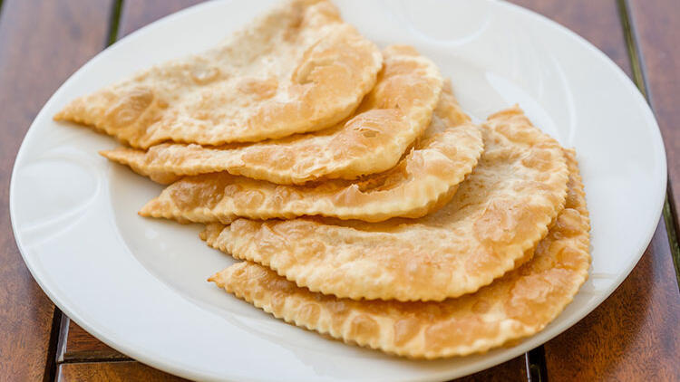

Çibörek

Çiğ börek ve çibörek şeklinde iki isimle tanınan, Kırım Tatarları'nın Eskişehir'e göçmesiyle ortaya çıkan ve günümüze Eskişehir'in meşhur hamur işi olarak gelen çibörek, yuvarlak hamurun içerisine soğan ve baharatlarla tatlandırılmış kıyma harcının konması ve kapatılarak kızartılmasıyla oluşan bir hamur işidir.